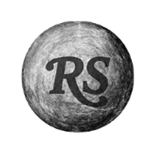
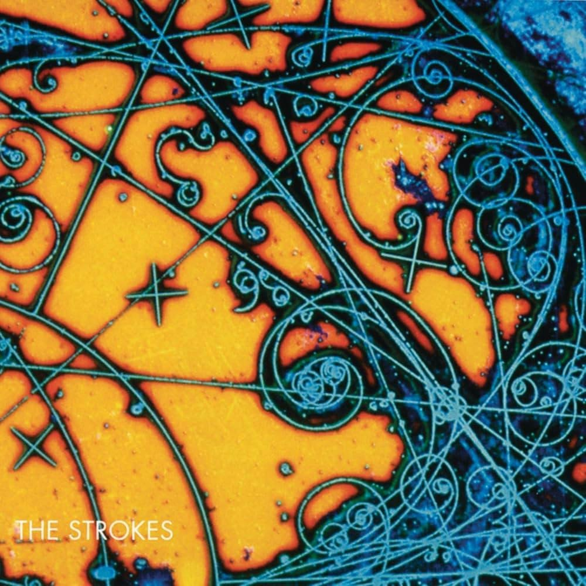

A 25 años de su lanzamiento, Is This It sigue más vigente que nunca
En uno de los mejores álbumes debut del siglo, The Strokes cambió el panorama del rock moderno, marcando el inicio de una nueva era para el género, resonando con una juventud cansada del mundo

Hay cosas que nunca cambian, y una de esas es el pesimismo juvenil. A principios de los años 2000, los jóvenes de las grandes ciudades parecían atrapados en un camino predeterminado para la mayoría: salir de la escuela, terminar la universidad, conseguir un trabajo de escritorio ocho horas al día, cinco días a la semana, y desahogar la frustración de la monotonía con placeres efímeros pero hasta cierto punto efectivos.
Todo esto ocurría en un momento de incertidumbre: el optimismo económico de los noventa se había derrumbado con el estallido de la burbuja puntocom y la recesión de 2001, mientras el mundo entraba en una nueva era marcada por los atentados del 11 de septiembre, el aumento de la vigilancia y un clima político cada vez más tenso.
Hoy, más de dos décadas después del inicio del nuevo milenio, el pensamiento colectivo entre muchos jóvenes no es tan distinto, cambiando solo los elementos del entorno: Instagram para vender estilos de vida inalcanzables, TikTok para terminar de destruir la capacidad de atención de las personas, ChatGPT para reafirmar cualquier cosa que se le diga en un tono complaciente y poco crítico, y el auge del fascismo y la extrema derecha en todo el mundo que al parecer su objetivo es generar la mayor cantidad de conflictos bélicos posibles.
Así pues, volver a los discos que marcaron el inicio del siglo ayuda a entender el espíritu de la época. Al realizar el ejercicio, es imposible ignorar a una banda neoyorquina que cambió el panorama del rock: The Strokes, con su álbum debut, Is This It.

La banda nació a finales de los noventa. Julian Casablancas volvía de un internado en Suiza, y en conjunto con sus amigos Nick Valensi en la guitarra y Fabrizio Moretti en la batería comenzaron a tocar juntos y a explorar un sonido influenciado por el garage rock y el post-punk. Poco después se sumarían Nikolai Fraiture en el bajo y Albert Hammond Jr en la segunda guitarra para completar la formación clásica del grupo. Lejos de los grandes escenarios, el quinteto empezó a construir su identidad tocando en pequeños bares y clubes de la escena neoyorquina.
Sus presentaciones llamaron la atención por tener una combinación poco común para la época: guitarras crudas, melodías enérgicas, letras sarcásticas y centradas en experiencias personales con las que cualquiera podría identificarse, además de una actitud despreocupada que recordaba tanto al punk neoyorquino como al rock británico de finales del siglo XX.
Un detalle curioso que acompañó el lanzamiento fue la existencia de dos portadas. La versión original, utilizada en la mayoría de países, muestra la fotografía de una cadera femenina con un guante de cuero negro apoyado sobre la piel, una imagen minimalista y provocadora tomada por Colin Lane.
El disco continúa con 'The Modern Age' y 'Soma'. La primera hace referencia a la búsqueda de autenticidad en una ciudad donde todo son apariencias. Versos como "Stop to pretend, stop pretending / It seems this game is simply never-ending" (Deja de fingir, deja de fingir / Parece que este juego es simplemente interminable), muestra esa impotencia de siempre tener que aparentar para encajar, además de reflejar el uso de drogas para que ese performance, por decirlo de alguna manera, sea más fácil de sobrellevar.
Es claro por qué este álbum impactó con tanta fuerza: ese sonido crudo, junto a unas letras brutalmente realistas, permitía que cualquier joven se reconociera en las vivencias que cantaba Casablancas. Una generación que necesitaba una válvula de escape encontró en Is This It el sonido perfecto para hacerlo.
Ese es precisamente el motivo por el que veinticinco años después sigue tan vigente. La situación de los jóvenes de hoy no dista mucho de la de aquellos que compraron el álbum en 2001: el ciclo se repite, los nombres cambian, pero el vacío es el mismo. Mientras eso no cambie, este disco seguirá sonando —y resonando— en las mentes de quienes, generación tras generación, se asomen al mundo y se hagan la misma pregunta que abre el proyecto: ¿eso es todo?



GABRIEL CAVALLO
MÁS SOBRE GABRIEL CAVALLO
Is This it
The Strokes - 2001
Crea o edita tu top 10 para agregar este album y compararlo con el ranking de Rolling Stone y la comunidad.
Ir a mi top 10